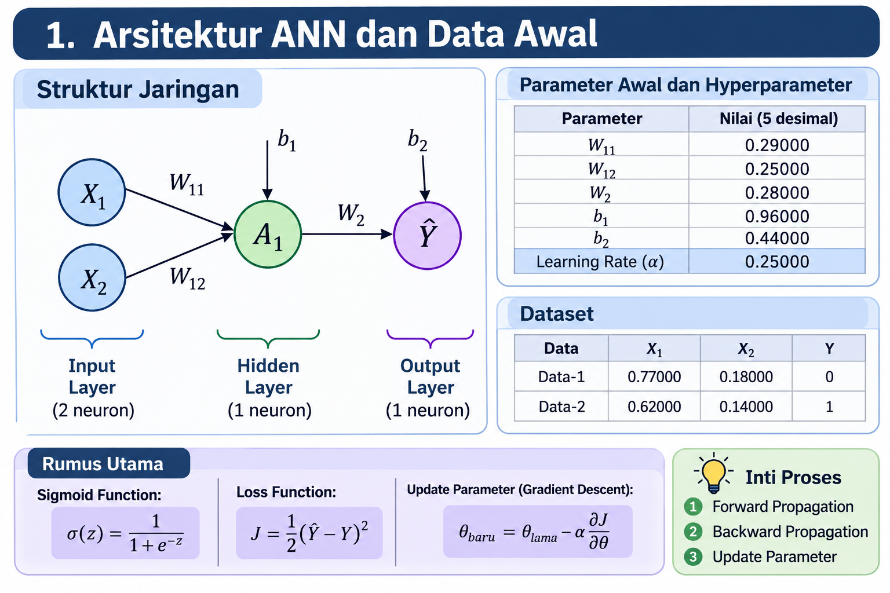
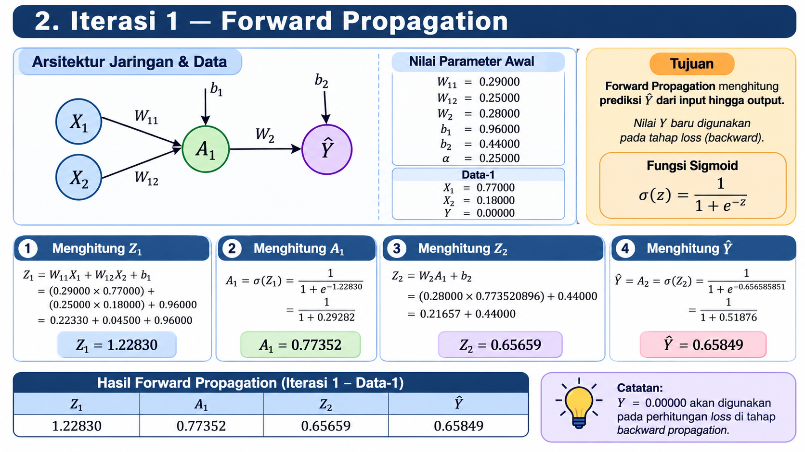
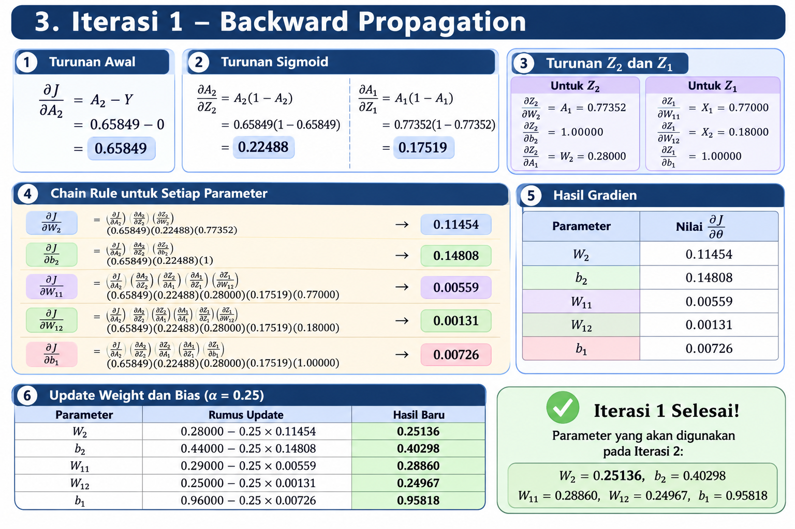
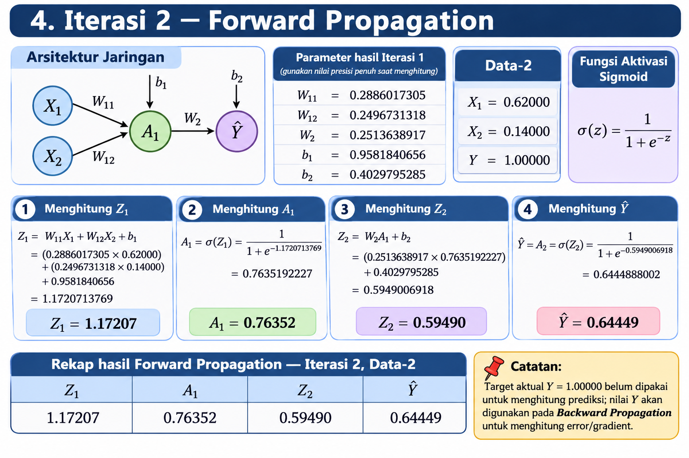
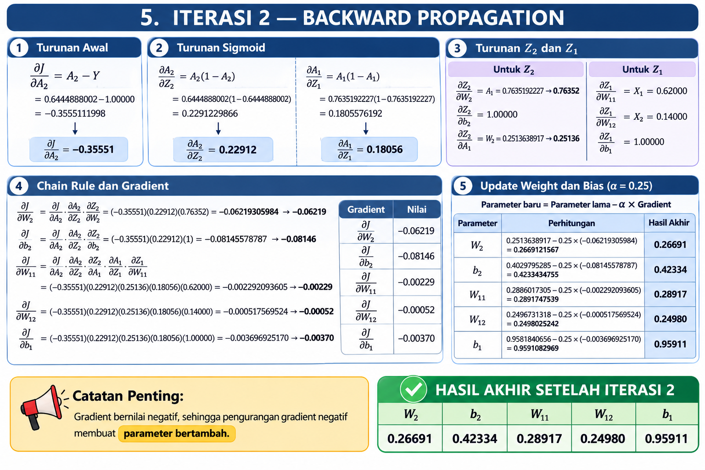

Diketahui sebuah arsitektur Multi Layer Perceptron dengan dua input (X1 dan X2), satu neuron hidden (A1), dan satu output (Ŷ) seperti pada gambar di bawah ini.
Berdasarkan arsitektur tersebut, berikut inisiasi untuk nilai bobot/weight dan bias:
| W11 | W12 | W2 | b1 | b2 |
|---|---|---|---|---|
Data yang tersedia yaitu:
| DATA | X1 | X2 | Y |
|---|---|---|---|
| Data-1 | |||
| Data-2 |
Jika nilai learning rate (α) yang digunakan adalah , serta pada iterasi 1 data yang digunakan adalah Data-1 dan iterasi 2 data yang digunakan adalah Data-2, maka hitunglah nilai pada field yang diminta untuk masing-masing iterasi.
Note: pada iterasi 2 dan seterusnya, nilai weight dan bias yang digunakan adalah nilai yang telah terupdate pada iterasi sebelumnya. Harap tuliskan jawaban sampai 5 angka desimal.
Galeri Lengkap 5 Tahap Proses ANN
Menampilkan seluruh 5 infografis proses komputasi secara berurutan. Klik pada gambar untuk memperbesar.




